home |
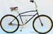1977 Cook Brothers Cruiser
| home |
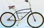1977 Cook Brothers Cruiser
|  pre-war ELGIN bikes - photo
gallery | clunkers.net - Alan Bonds' site |
'Klunkerz'
- recent documentary | Charlie Kelly's site |
Mountain Bike Hall of Fame pre-war ELGIN bikes - photo
gallery | clunkers.net - Alan Bonds' site |
'Klunkerz'
- recent documentary | Charlie Kelly's site |
Mountain Bike Hall of Fame |
|
|
last modified:
10/4/07 |
|
1937 Schwinn
Admiral
inspired by 1977 Marin "clunkers" |
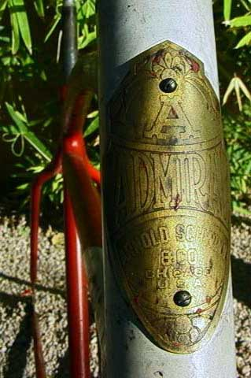
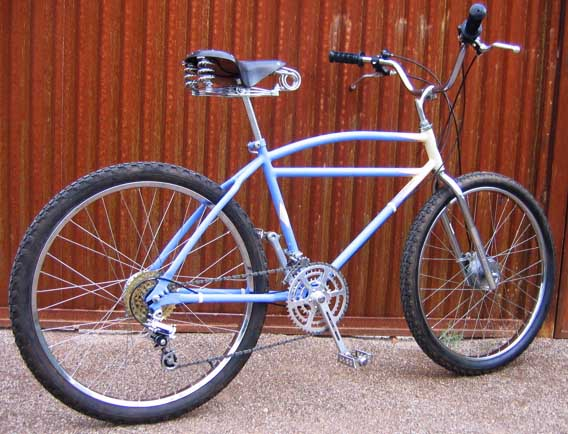
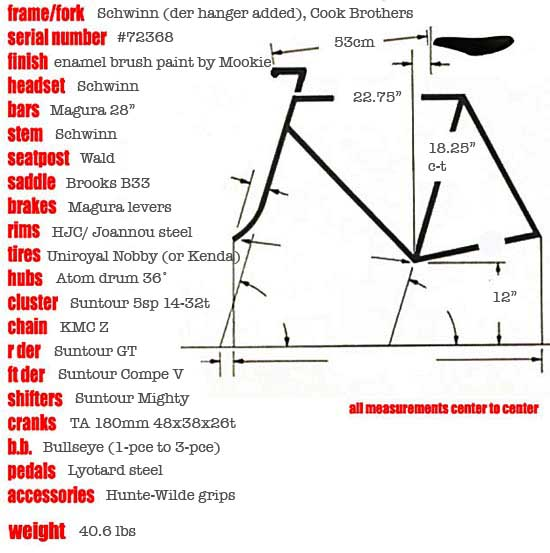
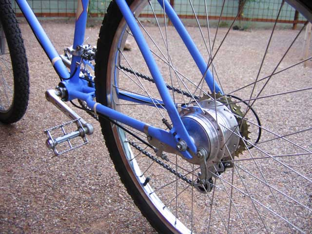
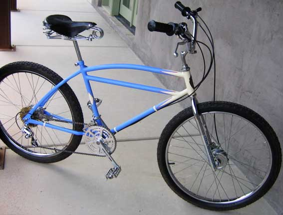
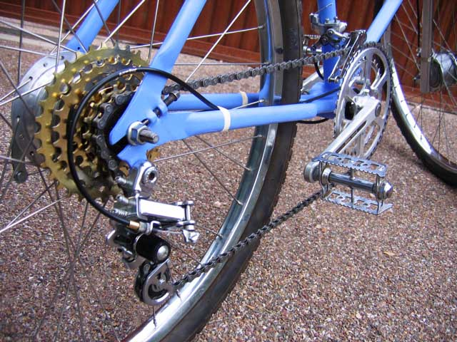
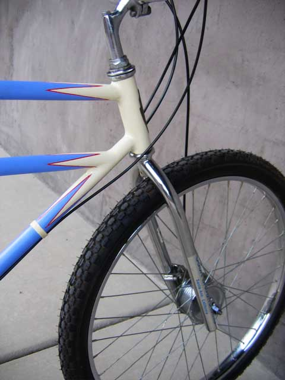
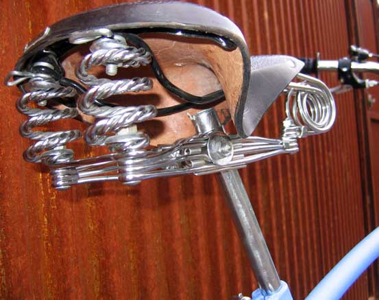
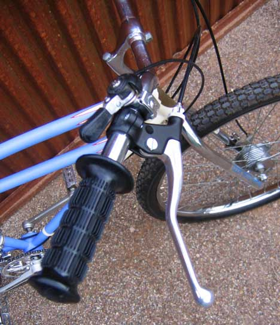
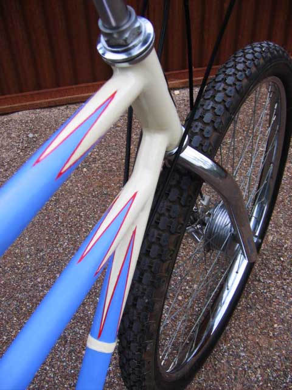
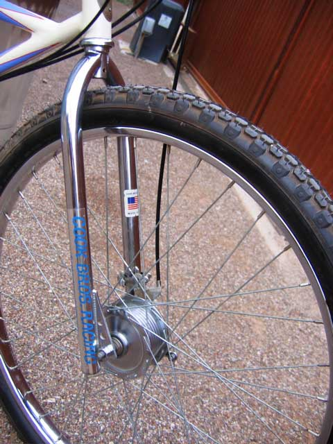
| home |
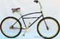1977 Cook Brothers Cruiser
| pre-war ELGIN bikes - photo
gallery | clunkers.net - Alan Bonds' site |
'Klunkerz'
- recent documentary | Charlie Kelly's site |
Mountain Bike Hall of Fame |
copyright © 2007